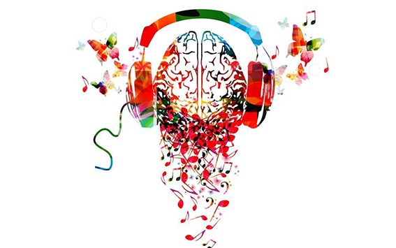

De la musique à l’enseignement : la transposition didactique
Cet article présente et explicite le concept de transposition didactique dans son histoire récente, et souhaite vérifier s’il est transférable, adaptable, et opératoire dans l’enseignement musical. Cette réflexion nous amènera aussi à reconsidérer la notion de disciplines dans l’enseignement musical, et les caractéristiques d’un savoir musical à l’aune d’une transposition didactique.
Lire l'article complet
Les bienfaits de la musique dans l’apprentissage
Durant la scolarité, la musique est une matière à part entière, dont les bases sont enseignées du CP à la 3ème. En outre, l’apprentissage de la musique en tant que loisir, activité extra-scolaire ou véritable passion, apporte de nombreux bienfaits. Focus sur le rôle et les avantages de la musique dans la scolarité de nos enfants ! Les effets bénéfiques de la musique sur le cerveau sont largement reconnus par la science. Apprendre un instrument dès le plus jeune âge, est un bon moyen de développer de bonnes aptitudes scolaires. Il est conseillé de sensibiliser les enfants à la musique même tout bébé. Elle permet aux enfants de développer de meilleures facultés de concentration et de mémorisation.
Lire l'article complet
Apprendre à jouer d'un instrument : il n'est jamais trop tard pour commencer !
«Tout est possible à n'importe quel âge, il suffit de travailler régulièrement et ne rien précipiter. »Claudine est professeur de tuba et de piano à Clermond Ferrand. En quarante ans de carrière, elle a constaté que l'apprentissage des enfants et des adultes se met en place de la même façon. « Qu'on ait huit ou quarante ans, les résultats dépendent du talent, de l'intelligence, de la rigueur du travail et de la passion.
Lire l'article complet

L’enseignement de la musique et son impact sur les fonctions exécutives
Un article paru dans la revue Frontiers in Neuroscience présente les résultats d’une étude longitudinale néerlandaise qui s’intéresse aux effets de l’enseignement de la musique sur les fonctions exécutives des élèves du primaire. Le principal objectif de cette étude randomisée contrôlée est de déterminer si des cours de musique structurés peuvent avoir un effet sur les fonctions exécutives qui sous-tendent les résultats scolaires.
Lire l'article complet